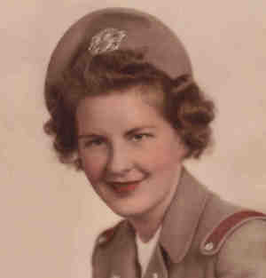

|
|
| 
Helen Marie ASIALA (1923-2019) |
Helen Marie ASIALA 5910
Noted events in her life were: • Census, 8 Apr 1930, Vinalhaven, Knox Co., Maine. 5911 • Census, 10 Apr 1940, Vinalhaven, Knox Co., Maine. 5912 • Residence: 52 SE Keuka Terrace: Stuart, Martin Co., Florida. • Education: graduated from high school, 1941, Vinalhaven, Knox Co., Maine. 5913 • Employment: McLean Hospital, Abt 1942, Belmont, Middlesex Co., Massachusetts. 5914 • Employment: Raytheon Mfg. Company, Abt 1943, Waltham, Middlesex Co., Massachusetts, YSA. 5914 • Education: Cadet Nursing Corps, Mass. General Hospital, 1944-1947, Boston, Suffolk Co., Massachusetts. 5914 • Employment: RN at the Smith College infirmary, 1945-1947, Northhampton, Hampshire Co., Massachusetts. 5915 • Employment: Brooklyn Visiting Nurse Assn, Abt 1950-1952, Brooklyn, Kings Co., New York. 5915 • Education: BS Nursing, Boston University School of Nursing, Aug 1952, Boston, Suffolk Co., Massachusetts. 5915 • Employment: NY City Health Dept, 1953-1954, New York, New York Co., New York. • Employment: charge nurse at Essex Visiting Nurse Assn, 1964-1965, East Hampton, Middlesex Co., Connecticut. 5915 • Residence, 1964-1985, East Hampton, Middlesex Co., Connecticut. 5915 • Employment: Connecticut State Health Dept, 1965-1985, East Hampton, Middlesex Co., Connecticut. 5915 • Employment: Discharge Planner and Health Services Coordinator, Windham Hospital, 1965-1985, Willimantic, Windham Co., Connecticut. 5916 • Retirement, 1985, East Hampton, Middlesex Co., Connecticut. 5915 • Obituary, 31 Aug 2019, Stuart, Martin Co., Florida. 5917 Helen married Benjamin LITWAK, son of Jacob LITWAK and Rose OLSHINETSKY, on 24 Sep 1953 in East Hampton, Suffolk Co., New York.5899 (Benjamin LITWAK was born on 8 Oct 1912 in Brooklyn, Kings Co., New York, died on 28 Nov 2006 in Stuart, Martin Co., Florida 5900 and was buried on 25 Jul 2022 in Vinalhaven, Knox Co., Maine 5901.) |
|
only search Stockdale Coddington Genealogy |
Table of Contents | Surnames | Name List
This website was created 9 Apr 2025 with Legacy 10.0, a division of MyHeritage.com; content copyrighted and maintained by coddgenealogy at gmail d0t com